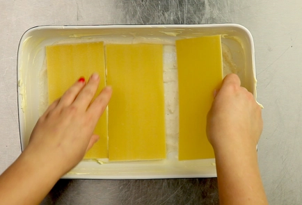

Вид пасты в форме тонких прямоугольных пластин, предназначенных для прослаивания разными начинками и запекания. Имя этой пасты стало нарицательным для целого жанра рецептов блюд с многочисленными вариациями. Лазанья изначально была привилегированным блюдом и готовилась только в праздники.
Подготовьте ингредиенты домашнего соуса болоньезе. Прежде всего, вымойте мякоть говядины, нарежьте и пропустите через мясорубку с частой решеткой. Можно измельчить в блендере.
Лук и чеснок для болоньезе очистите, порубите. Морковь вымойте, очистите и нарежьте очень мелкими кубиками. Сельдерей вымойте и почистите. Нарежьте мелкими кубиками.
В большой глубокой сковороде нагрейте оливковое масло. Выложите подготовленные овощи и, помешивая, жарьте на среднем огне до золотистого цвета (около 10 минут).
Фарш жарить до полуготовности. Влить в него соус болоньезе, посолить и поперчить по вкусу.
Духовку разогреть до 180 градусов. Форму смазать сливочным маслом. На дно вылить немного соуса бешамель, чуть-чуть, только чтобы покрыть дно.

Выложить пласты (не вареные). На пласты выложить получившийся фарш (не жалеем!), на фарш — натертый сыр. На сыр — соус бешамель.
Соуса нужно выкладывать столько, сколько необходимо, на ваш взгляд, чтобы лазанья получилась сочной. Поверх соуса выложить сухие листы лазаньи. Повторить процедуру.
Последний слой листов промазать соусом бешамель и сверху щедро засыпать сыром. Дать постоять минут 7–10. Поставить в духовку. Печь 30 минут.
Обязательно старайтесь промазывать хорошенько края сухих листов: иначе получится суховато
Готовность соуса определяется визуально. Некоторые любят, чтобы ингредиенты томились до однородного состояния: на это уходит в среднем 3 – 3,5 часа. Мы рекомендуем сохранить структуру блюда с небольшими кусочками овощей и готовить соус не больше 2 часов.